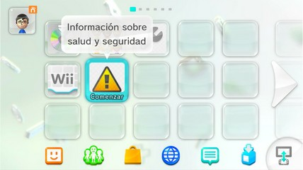

Identificar PayloadLoader
PayloadLoader se instala en el icono de Información sobre salud y seguridad. PayloadLoader se puede configurar para que cargue automáticamente al encender la consola, a este se le llama PayloadLoader de arranque automático (Autobooting PayloadLoader). El autobooting puede ser desactivado y dejar unicamente PayloadLoader de arranque manual el cual carga hasta abrir manualmente el icono de Información sobre salud y seguridad.
Para una correcta identificación debes quitar la tarjeta SD de la ranura frontal de la Wii U y desconectar todos los dispositivos USB de la consola, y desactivar las funciones en modo de reposo. Después de hacer la prueba puedes volver a activar las funciones en modo de reposo y volver a conectar los dispositivos USB y la tarjeta SD en la ranura frontal, no se pierden los juegos ni nada de lo que ya tienes instalado.
Instrucciones
- Desactiva las funciones en modo de reposo siguiendo los pasos de este enlace. Si ya tienes desactivadas las funciones en modo de reposo continúa con los pasos de abajo.
- Con la consola apagada quita la tarjeta SD de la ranura frontal de la Wii U y desconecta todos los dispositivos USB de la consola.
- Enciende la Wii U y observa con atención la pantalla de la TV y/o la pantalla del Wii U GamePad si aparece el mensaje
Failed to load sd:/wiiu/payload.elf Starting the console without any modificationsentonces la Wii U tiene PayloadLoader de arranque automático. - Si no apareció el mensaje al encender la consola entonces la Wii U no tiene PayloadLoader de arranque automático, pero aún es posible tener PayloadLoader de arranque manual. Abre el icono de Información sobre salud y seguridad en el menú de Wii U.
- Si solamente al abrir el icono de Información sobre salud y seguridad aparece el mensaje
Failed to load sd:/wiiu/payload.elf Starting the console without any modificationsentonces la Wii U tiene PayloadLoader de arranque manual. - Si no apareció el mensaje al encender la consola ni al abrir el icono de Información sobre salud y seguridad entonces la Wii U no tiene PayloadLoader en ninguna de sus formas.
- Apaga la consola y vuelve a conectar los dispositivos USB y la tarjeta SD.


